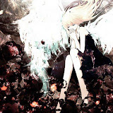

lunamaryllis
Member since July 21, 2025 •
Biography
lunamaryllis (formerly 'sai') is a musician whose first release, Luna, debuted on SoundCloud in July 2024. She is known for her connection to lexycat, and songs like 'floating' and 'brokenheart'.
lunamaryllis' RAINOUT debut releases August 15. For now, she releases music independently and sometimes under the label.